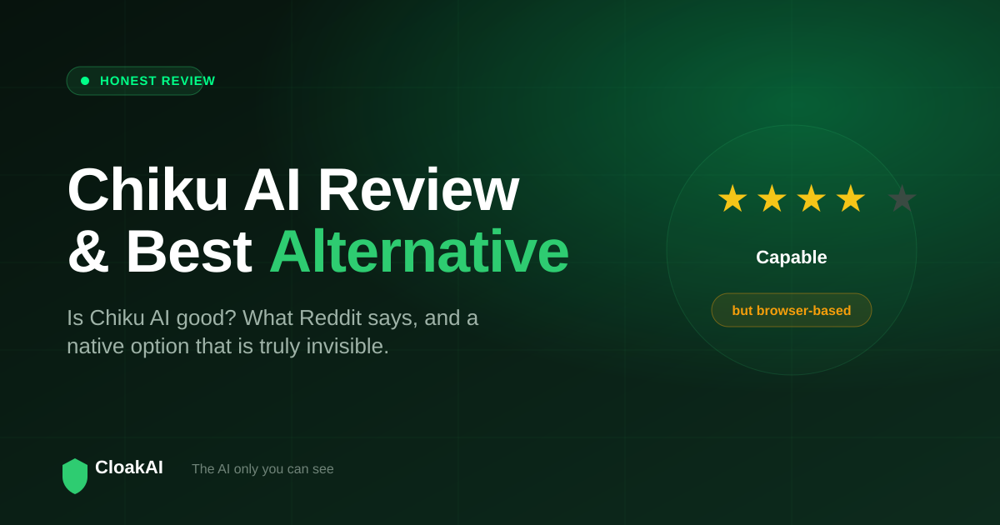
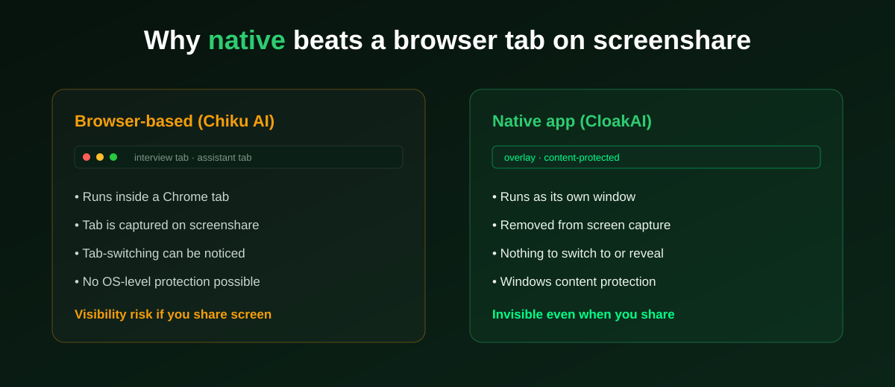

Chiku AI has become a popular name among Indian job seekers looking for a real-time interview assistant, which is why searches for Chiku AI review, is Chiku AI good, and Chiku AI alternative keep climbing. This is an honest, balanced review: what Chiku AI does well, where its browser-based design creates real risk, what the (limited) Reddit discussion says, and which alternative to consider if invisibility on screenshare matters to you.
Chiku AI is a genuinely capable, India-first interview tool that is cheaper than Parakeet AI. Its biggest weakness is that it is browser-based, so it cannot be truly invisible when you share your screen. If that matters, CloakAI is the stronger alternative: a native Windows app with OS-level invisibility, cheaper per hour, with a free 20-minute trial.
What Chiku AI Gets Right
Credit where it is due. Chiku AI understood the Indian market earlier than most global tools, and it shows:
- India-first tuning. Its "Desi Mode" shapes answers to sound like how Indian engineers actually speak in interviews, which is a real differentiator against Western tools.
- Price versus Parakeet. Chiku positions itself as significantly cheaper than Parakeet AI, and for many candidates that alone makes it worth a look.
- Multilingual and coding support. It handles many languages and technical rounds, so it is not just for behavioural questions.
- Straightforward setup. Being browser-based, it is quick to get started with, no install required.

Where Chiku AI Falls Short: Browser-Based Detectability
The most important thing to understand about Chiku AI is architectural, not cosmetic. It runs in the browser. That is convenient, but it has one serious consequence for interviews: a browser window, and the tabs inside it, are captured by screen sharing and screen recording by default. If an interviewer asks you to share your screen, or the session is recorded, a browser-based assistant is part of what gets captured. Switching between your interview tab and your assistant tab is also visible.
This is not a flaw Chiku can patch, because web pages simply do not have access to operating-system content protection. Only a native application can mark its own window as protected so that screen capture excludes it. That is the core reason a native tool has a structural advantage over any browser-based one on the single feature that matters most in a live interview: staying unseen.
Chiku AI's India-first positioning is genuinely good. The catch is that "invisible" and "browser-based" are hard to be at the same time, because the browser is exactly what screenshare captures.
New here? Try every feature free for 20 minutes, no signup and no card needed.
Try CloakAI for free 20-minute free trial · No credit card required · Windows 10 & 11What Reddit Says About Chiku AI
Reddit is a common place people look for a Chiku AI review, but the discussion is thin, because Chiku is a newer, smaller product with a limited third-party review footprint. The positive threads highlight the India-first tuning and the price advantage over Parakeet. The cautious ones raise the same structural point made above: a browser tool is inherently more detectable on screenshare, and there are fewer independent reviews to lean on than for older tools. The right takeaway from any of these threads is not to trust a single comment, but to test screenshare invisibility yourself before you rely on any tool in a real interview.
Chiku AI vs CloakAI: The Alternative Comparison
| Feature | Chiku AI | CloakAI |
|---|---|---|
| Real-time live answers | ✓ | ✓ |
| Architecture | ⚠ Browser-based | ✓ Native Windows app |
| Invisible on screenshare | ✗ Tab is captured | ✓ OS-level content protection |
| Resume personalisation | ✓ | ✓ Deep |
| On-screen coding scan | ✓ | ✓ |
| Entry price | ₹1,199 + GST | ₹499 (1 hr) / ₹999 (3 hr) |
| Free trial | ⚠ Limited | ✓ 20 min full access |
| INR / UPI payments | ✓ | ✓ PhonePe / UPI |
Not ready to buy? Test every one of those features free for 20 minutes first.
Try CloakAI for free 20-minute free trial · No credit card required · Windows 10 & 11Who Should Choose Which?
Choose Chiku AI if you want a quick, no-install browser tool, you are comfortable never being asked to share your screen, and its Desi Mode phrasing appeals to you. Choose CloakAI if screenshare invisibility is non-negotiable, you want deeper resume personalisation, you prefer a lower per-hour price with a free trial, and you want a native app rather than a browser tab. For most candidates in technical or screen-shared interviews, the invisibility difference is decisive.
Final Word
Chiku AI deserves credit for reading the Indian market well and undercutting global rivals. But the browser-based design is a real ceiling on the one feature that defines this category: staying invisible when your screen is shared or recorded. If you want that guarantee, along with deeper personalisation, lower cost, and a genuine free trial, CloakAI is the stronger Chiku AI alternative. Try both if you like, but test the screenshare behaviour on each before you trust it in a real interview.
Line it up for your next interview and try the whole thing free for 20 minutes.
Try CloakAI for free 20-minute free trial · No credit card required · Windows 10 & 11